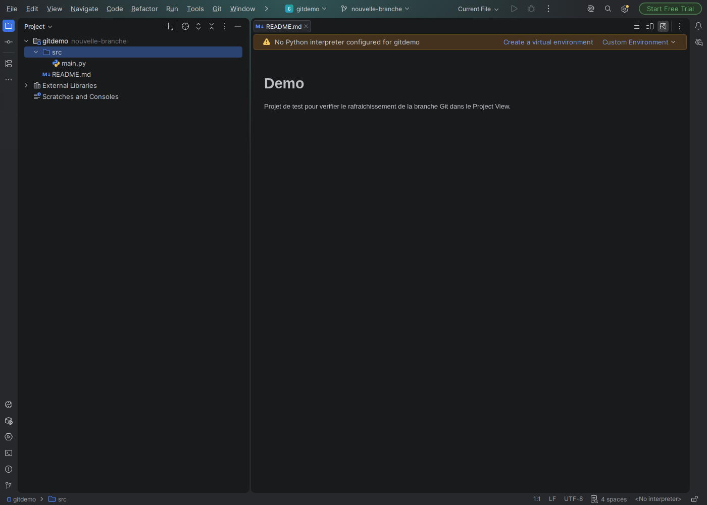
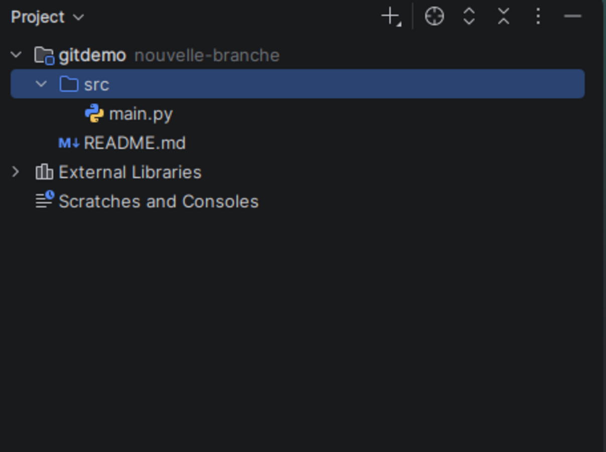

Git Branch Badge
Shows the Git branch you are on, right next to your project name. The badge appears on the project root in the Project view, as path [branch]: the project path is kept, the branch is added next to it.
Price: Free — Free on the JetBrains Marketplace


What it does
- Always up to date: the label refreshes by itself the moment you switch branches, whether you switch inside the IDE or from a terminal.
- Detached HEAD too: on a detached HEAD the label shows
detached @ abc1234instead of disappearing. - No configuration: it only reads the local
.git/HEADfile — no account, no network request, nothing to configure.
Who it is for
Anyone who juggles several branches at once and wants to see the current one without opening a terminal or losing the Project view.
Limits
- It reads the repository that contains the opened project. A project opened outside any Git repository shows no badge.
- It shows the local branch only; a remote-tracking reference is not a branch and is not displayed.
Details
- Price
- Free
- Latest version
- 0.0.2 (approved and listed)
- Compatible with
- IDE builds 243 and later
- License
- MIT
- Downloads
- 20 (measured on 4 November 2026)
- Source code
- Public on GitHub
The full source code of this plugin is published on GitHub:
https://github.com/tgg49099-dotcom/atlassian-apps/tree/main/jetbrains-plugins/git-branch-badge